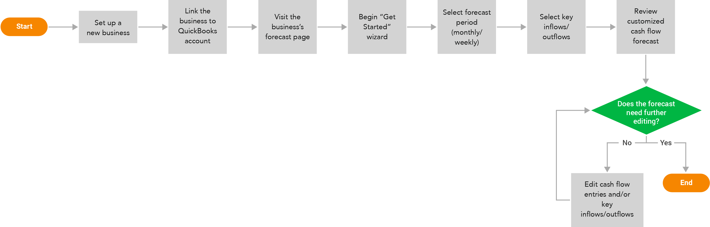

CashFlowTool Standard Forecasting Mode
Background
CashFlowTool is a cash flow management service aiming to help small business owners and accountants manage the cash flow of a business. The software offers various powerful features that analyze financial data to efficiently present current cash metrics, transactions, KPIs, and forecast future cash activities.
After several version releases of CashFlowTool, the application got more and more usage as well as feedback from business professionals. From communications with our user base, the team learned that the then-current forecasting method did not sufficiently suit certain businesses’ unique situations. This called for a need for a new method of cash flow forecasting that can produce more accurate and customizable cash flow forecasts. This led to the development of what was eventually called CashFlowTool’s Standard Forecasting Mode.
Process
Discovery
To start off this project, we collected data from user activities to understand user engagement and satisfaction. We also conducted semi-structured interviews with 5 users who were having issues with CashFlowTool’s original forecasting method.
Through these efforts, we were able to pinpoint major challenges with the app’s forecasting model: inaccuracies due to overgeneralization of financial circumstances and complicated settings for customization.
As the team interpreted our observations, we deduced the findings into the following major goals for the Standard Forecasting Mode:
Offer more accurate forecasted data, especially during the first-run experience
Make it intuitive for users to customize settings for their cash flow forecasts
Give users efficient ways to edit cash flow entries
Ideation & Execution
Journey map
To further understand the pain points during our customer’s experience and identify potential solutions, we created a user journey map for an archetypical user persona. The user journey map lays out the problems, emotions, and possibilities along the process of this user checking her business’s cash flow forecast, customizing, and analyzing it.
Based on the journey map, the team identified that usability issues mainly resulted from confusion in the user onboarding process and the complicated customization functionality for the cash flow forecast to suit each business’s own circumstances. With these findings, the team established several opportunities for the Standard Forecasting Mode.
Sketching ideas
In the next step, the team met up for several whiteboarding sessions to form a clearer picture of the user experience with the Standard Forecasting Mode.
User flow
The Standard Forecasting Mode also called for the need to facilitate an updated user flow. The team decided to focus on the onboarding experience within this flow since it plays a major role in a user’s ability to adopt the new forecasting method.
Prototype & user testing
After several iterations, we were able to create an MVP prototype to test with existing CashFlowTool users to validate our assumptions and survey the potential user adoption of the new forecasting mode.
We ran 5 moderated user testing sessions with CashFlowTool users who were having issues with the original forecasting mode, including both business owners and accountants. During these sessions, we had participants carry out tasks during the onboarding flow and forecast customization process. As the participants went through the tasks, they were asked to think aloud their reactions and opinions.
Final design
Taking in feedback from the user testing of our MVP prototype, we went back to iterating on the design with high-fidelity mockups. With the final iteration, we presented the following major functionalities to the user experience of the Standard Forecasting Mode.
Key inflows and outflows
The Standard Forecasting Method introduces the concept of key inflows and key outflows. These are top customers and vendors or important revenue streams and expenses. This concept helps declutter the displayed data and helps users focus on details that matter the most to their businesses.
Only the selected key inflows and outflows would be individually forecasted and displayed with details in the forecast data table. Everything else is calculated and listed as a lump sum. This way, while analyzing their data, users would not get overwhelmed by an influx of numbers, lots of which don’t have a major impact on their cash flow forecasts. They instead have the ability to choose only important relationships to look at in close detail.
Original: Every transaction is projected in the forecast.
New: Only the key inflows and outflows are projected with details. Everything else is grouped under "All others."
At any point, users have the ability to update the key items.
3-step forecast setup process
To get users started with the Standard Forecasting Mode, we decided to incorporate 3 steps: choosing a forecast period of either monthly/weekly, selecting key inflows, and selecting key outflows.
By guiding users to curate their own settings at the very start, this experience helps users thoroughly utilize customization to optimize the accuracy of the initially generated forecasts.
Data table interface
We split the cash flow forecast into 2 tabs: Historical Explorer and Baseline Forecast.
Historical Explorer displays all historical data from the past 12 months of the business’s cash flow.
Baseline Forecast shows only a few past data points for reference and focuses on the forecasted period.
The forecasted cash flow entries are now displayed as cells in a table, instead of individual rows like in CashFlowTool’s previous versions. The cells make it easier and faster to scan forecasted data and make edits. This interface is also close to the layout of a spreadsheet, which is largely familiar to business owners and accountants, hence making it easy for these users to adopt.
Original: An entire row is used to display each transaction.
New: Each row represents an entity, while each cell within a row displays a transaction associated with its respective entity.
Pop-up edit window with autofill
Clicking on a cell triggers a pop-up edit window. This makes the process of editing much more efficient and manageable compared to the previous user flow, which regularly relies on a modal.
Original: The user has to scan through each row to find and edit each transaction.
When adding a new transation or modifying a reccuring pattern, an overlay modal pops up for each entry, making the process time-consuming.
New: An editor pops up when a cell is clicked on, allowing for quick edit. Within this window, the user sees various autofill options that can help them quickly modify multiple value associated with an inflow/outflow.
Users also have the option to minimize this window into a top toolbar, if they prefer to have the data table less obstructed by the editor.
Implementation, Outcome & Reflection
The Standard Forecasting Mode was released as a beta feature in April 2020, giving users an extra option besides the original forecasting mode. For differentiation, the original mode was renamed as the Detailed Forecasting Mode. Overall, we received majorly positive feedback from a range of users, especially those who had experienced customization problems with the previous Detailed Forecasting Mode.
With the option to easily switch between 2 forecasting modes, many users expressed excitement over the ability to choose the mode that best suited their business circumstances. Since all data including data modifications and customizations are reserved in each mode, users were glad they could try out the new Standard Mode to test out the functionalities without losing their original forecast settings.
With the new forecasting mode in place, we plan to keep a close eye on user adoption of the new Standard Mode and collect feedback through various channels. Since it’s still a beta feature, we would be adding iterations on both design and technology aspects to improve the Standard Mode over time. Eventually, based on both our business goals and user needs, we also see a potential goal of unifying the two forecasting modes into one single coherent experience that satisfies various needs across different types of businesses.